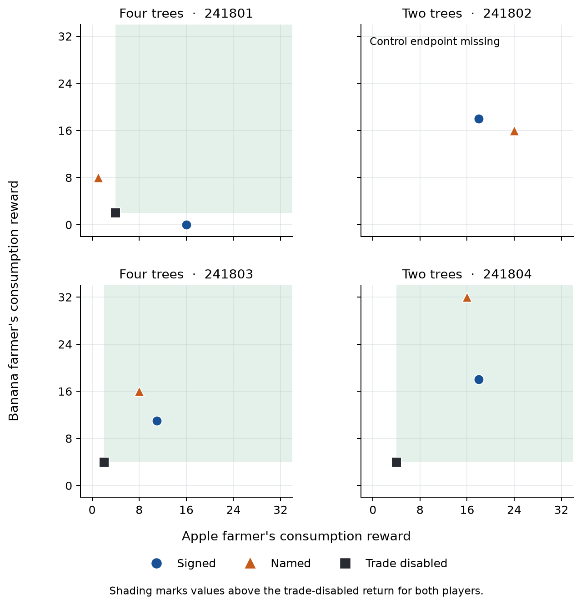

Spontaneous cooperation
in language agents (in progress)
When agents have their own interests, a completed deal can leave one of them worse off. We follow each opportunity from the offer an agent could actually accept to the payoff each participant received.
Who gets a chance to trade?
Four GPT-5.4 mini farmers shared an orchard. We exchanged starting positions within each farming role while keeping the map, trees and rewards fixed. In one matched pair, A and B traded once in the original layout. After the swap, C and D traded twice.
Across four paired seeds, all eight trades involved the two farmers who started in the tree columns. Four of the eight worlds had no trades. In the archived original, the two center farmers saw offers but held no stock to exchange. Their zero trades alone tell us little about their willingness to cooperate.
One model draw per layout and seed. Three pairs were run fresh. The fourth used an archived original. The video shows the recorded trajectories.
Watch two agents trade fruit
Two independently controlled DeepSeek Flash farmers could harvest, eat or barter. Both knew the trading rules. Their instructions omitted the explicit reminder to trade.
Replay transcript. The left panel is the evaluator’s map. The other two show each farmer’s native visual observation. Four exchanges settled at frames 9, 33, 41 and 57. By frame 96 each player had earned 16 consumption points. The video briefly holds each trade frame.
Orchard layout, seed 241801. Recorded decisions from one development run, rendered with the Melting Pot engine. All 96 replayed transitions matched the archived observation and event hashes. Engine license.
Who gained from the 13 completed services?
In eight four-person markets, Flash and a local reservation-price rule each delivered and paid for 13 services. Five of those exchanges left both Flash partners above their exit payoff. Under the rule, all 13 did.
In one Flash deal, a price of 6 left the buyer 4 points above exit and the seller 2 points below it. Replaying the same service at a price of 9 gave each partner a 1-point gain. Across the 13 paid deals, changing only the price could have made two additional deals worthwhile for both partners.
Counts and sample limits
| Policy | Paid | Both gained | Below exit |
|---|---|---|---|
| Exit | 0 | 0 | 0 |
| Local rule | 13 | 13 | 0 |
| Flash | 13 | 5 | 12 |
| Central planner | 16 | 16 | 0 |
Each profile permits two mutually profitable pairings. All four seats use the assigned policy. Four Flash worlds ended naturally. For four interrupted worlds, the saved state fixes the primary endpoint. One exact individual payoff remains an interval. Each profile has one Flash draw.
What the agents did
Choosing a service partner
In markets 1 and 3, a buyer accepted its only actionable offer. Its deal benefited both signers and ruled out a matching that could have benefited all four participants.

Restoring a relay after a storm
In test 01, the builder and installer handed over the module, installed it, recharged, repaired the damage and activated the relay at decision 12. Neither accepted a formal agreement. Utilities were 20 and 25.

Trading fruit without a reminder
Two new pairs made four and two native trades after removal of the explicit trading reminder. Both made their first exchange at frame 9. Trading rules remained visible. The matched historical counts were one and four, so these two development draws leave the average cue effect open.

Benchmark implementation
A cross-task evaluation recorded 173 episodes that reached a terminal state across 79 joint private-interest profiles: 100 service markets, 25 coalition tasks and 48 trust tasks. These yielded 396 individual outcomes. The eight matched four-person markets above are a separate policy comparison.
Tasks and interfaces
Native barter, spatial relay and recovery, service markets, coalitions, commons and delayed trust. Agents receive individual observations and histories, communicate voluntarily, and choose executable actions. Evaluator-only profiles establish reference opportunities.
Instances and reproducibility
48 base economic profiles, 24 partner-choice cases and 90 spatial candidates have fixed splits. The local release supports external controllers and replay. All 185 transitions in 30 scripted market controls verified. Independent installs reproduced all 31 archived native trades, with two worlds differing in consumption reward.
Generated profiles and completed model trials have different denominators. Semantic understanding of a partner’s private goals still awaits independent human validation.
Related experiments
Spontaneous cooperation, mixed motives and partner search each have close precedents. The comparison below identifies the decision record each approach makes observable.
Shall We Team Up Wu et al. · Findings of EMNLP 2024
Studies whether cooperation emerges in three competitive simulations without explicit behavioral directions, and compares the resulting patterns with human data.
The closest precedent for the motivating question. Our cue-removal study is a small existence demonstration. The stronger contribution is tracing actionable offers through native settlement and each player’s consumption. Primary paper ↗
Cooperate to Compete O’Neill et al. · EMNLP 2026
Players pursue asymmetric secret objectives in a conquest game. Private negotiations are nonbinding. Human and model negotiations and interventions are evaluated against game outcomes.
Use this as the comparison for temporary alliances and voluntary follow-through. Our service task also reconstructs mutually profitable schedules that were available at a particular signature. Primary paper ↗
Magentic Marketplace Bansal et al. · arXiv 2025
Consumer assistants search competing service agents. The authors vary search conditions and examine achieved utility, proposal bias and welfare.
The closest market comparison. In our data, a buyer sometimes has only one actionable offer. Reconstructing its alternatives separates that case from choosing the first of several offers. Primary paper ↗
CoopEval Tewolde et al. · 2026
Compares repetition, reputation, mediation and conditional payments across four social dilemmas. The intervention changes the institution supporting cooperation.
A mechanism comparison would answer whether an institution improves cooperation. Our proposed intervention instead changes the underlying availability of mutual gain while leaving the institution fixed. Primary paper ↗
Melting Pot Leibo et al. · ICML 2021
Evaluates generalization to novel multi-agent scenarios and social partners through executable environments.
We use native Fruit Market trade and consumption as independent event and reward records. Two cue-removal trials do not establish generalization to new partner populations. Primary paper ↗
MultiAgentBench Zhu et al. · ACL 2025
Tracks intermediate collaboration milestones and compares coordination structures and strategies across interactive tasks.
Reporting intermediate events already has precedent. Our service measurements ask whether those events implement an individually worthwhile exchange, relative to each signer’s exit. Primary paper ↗
SOTOPIA Zhou et al. · arXiv 2023, revised 2024
Uses role-play scenarios with social goals and evaluates interactions with SOTOPIA-Eval, including comparisons between people and models.
Social goal achievement is a separate construct. Our current behavioral claims use executed actions and payoffs. Independent validation of semantic goal understanding remains open. Primary paper ↗
Next experiment
On fresh pairs of service worlds, vary only the seller’s private cost so a mutually profitable deal exists in exactly one version. Give both versions the same neutral instructions. Measure profitable fulfillment when feasible and harmful commitments when no deal can beat exit for both.
Proposed design. Repeat independent draws, randomize order within profiles, and compare decisions after agents have received informative offers.